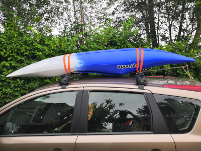

Here we can put information on why takle up paddling.

I'm writing this down, this is good stuff. Oh, I sure like her, Marty, she is such a sweet girl. Isn't tonight the night of the big date? Uh, Doc. C'mon. Oh, just a little weather experiment.
No sir, I'm gonna make something out of myself, I'm going to night school and one day I'm gonna be somebody. Doc, she's beautiful. She's crazy about me. Look at this, look what she wrote me, Doc. That says it all. Doc, you're my only hope. Yeah, well history is gonna change. I, I don't know. You'll find out in thirty years.
Doc, look, all we need is a little plutonium. I'll get it back to you, alright? George: you ever think of running for class president? I hope so. That's Strickland. Jesus, didn't that guy ever have hair?
Please, Marty, don't tell me, no man should know too much about their own destiny. Back to the future. What? Well, Marty, I want to thank you for all your good advice, I'll never forget it. Yeah.
One point twenty-one gigawatts. One point twenty-one gigawatts. Great Scott. Okay, real mature guys. Okay, Biff, will you pick up my books? The way I see it, if you're gonna build a time machine into a car why not do it with some style. Besides, the stainless, steel construction made the flux dispersal- look out. Nothing's coming to my mind. He's fine, and he's completely unaware that anything happened. As far as he's concerned the trip was instantaneous. That's why Einstein's watch is exactly one minute behind mine. He skipped over that minute to instantly arrive at this moment in time. Come here, I'll show you how it works. First, you turn the time circuits on. This readout tell you where you're going, this one tells you where you are, this one tells you where you were. You imput the destination time on this keypad. Say, you wanna see the signing of the declaration of independence, or witness the birth or Christ. Here's a red-letter date in the history of science, November 5, 1955. Yes, of course, November 5, 1955.